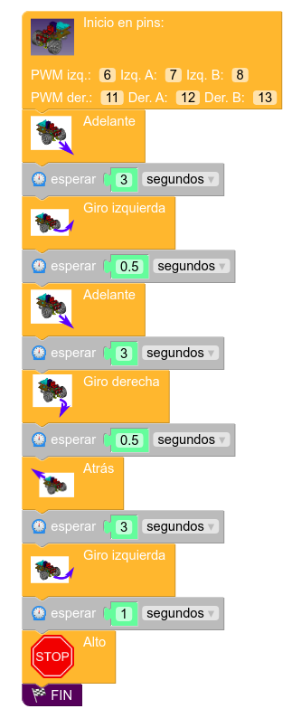
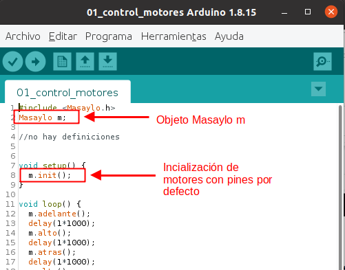
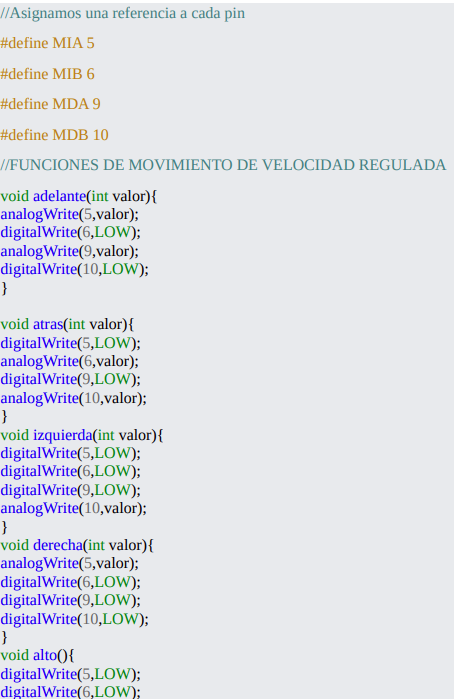

Según los conocimientos previos del alumnado en programación podemos tener tres niveles de desarrollo de programas:
Presentación Masaylo
Entornos de programación
Programación gráfica. MASAYLOBLOCKLY
Indicada para personas con poca experiencia en programación. Se programa en un entorno de programación gráfico por bloques. Puede estar indicados para últimos cursos de primaria y primeros cursos de ESO.

Programación con IDE Arduino y librería
La librería son una serie de instrucciones para Arduino preparadas para controlar el robot de forma sencilla. Esta programación es textual pero ayudándonos de instrucciones prefabricadas que nos ayudan a controlar los elementos del robot. Esta programación está pensada para personas con experiencia de programación gráfica previa. Últimos cursos de ESO y/o primero de Bachillerato.

Programación en IDE de Arduino sin librería
EL usuario debe programarse las acciones del robot interactuando con los elementos físicos del mismo, sin ayudas de instrucciones pre-hechas (librería). Programación destinada a usuarios avanzados. Ultimo curso de bachillerato con experiencia previa.

Obra publicada con Licencia Creative Commons Reconocimiento Compartir igual 4.0